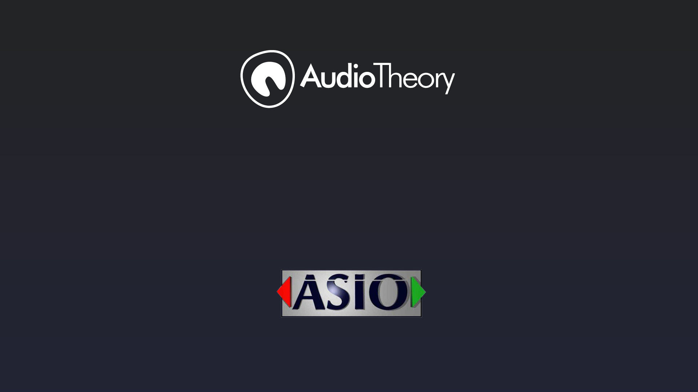
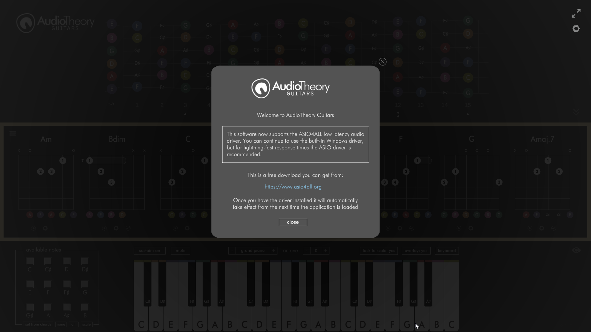
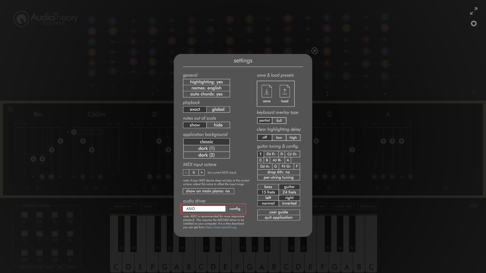
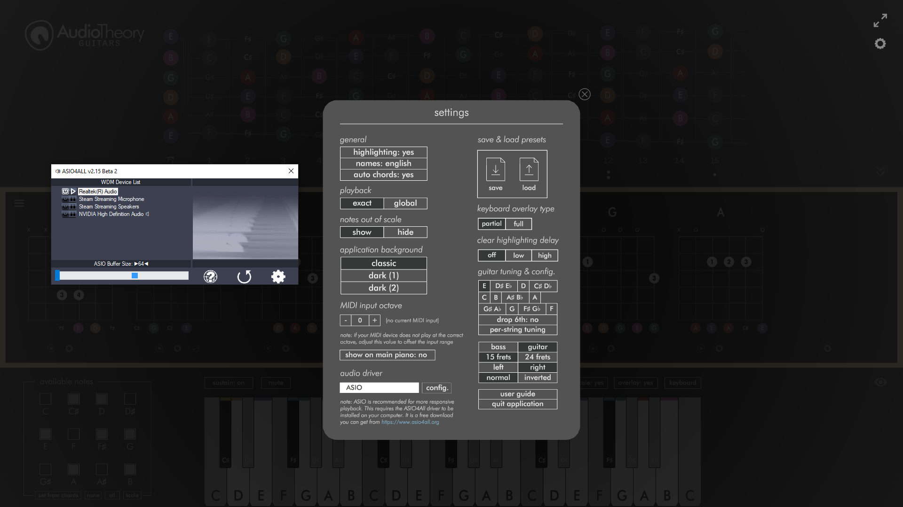
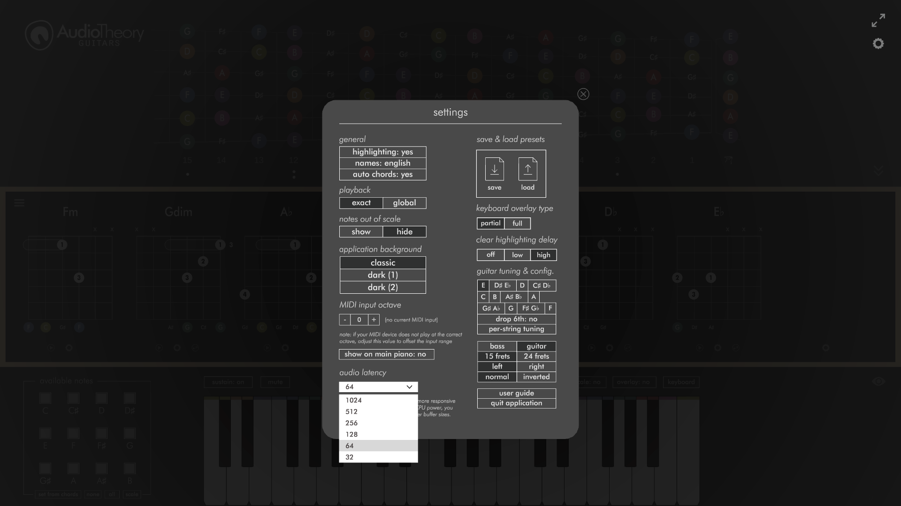
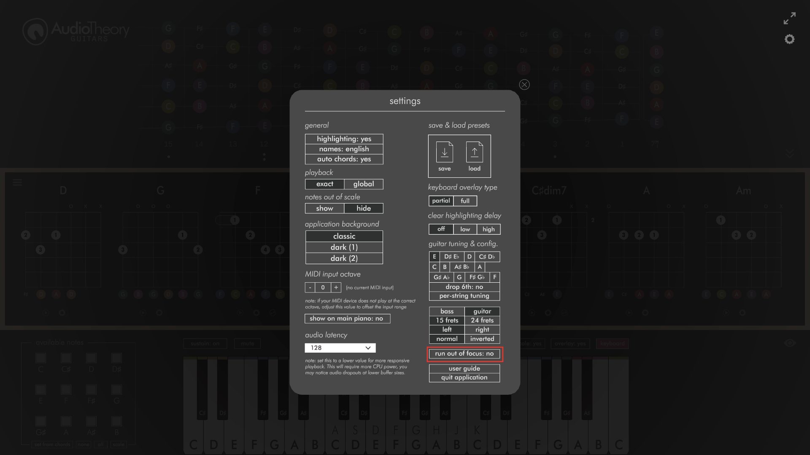

AudioTheory
ASIO & Performance Updates

A series of new updates are now available across the range of AudioTheory software. These combines a set of 'under the hood' optimisations and performance enhancing features which have been rolled out across the following updates:
AudioTheory Guitars version 2.1.0 and version 2.2.0
AudioTheory Piano Keys version 1.2.0 and version 1.3.0
AudioTheory Grids version 1.3.0
Let's have a look at what's new...
AudioTheory and the ASIO4ALL driver
ASIO4ALL is a freeware audio driver designed for low latency playback. Most DAWs require the use of an ASIO driver, and whilst it is optional for AudioTheory, it's highly recommended. It's very easy to install and you are guaranteed to get better performance than the built-in Windows driver.
And just to confirm, this is a Windows specific feature. Mac and Linux come with audio drivers that can handle very low latencies out-of-the-box. More on how the settings have changed on these platforms in a bit.

Windows specific changes
There are a few things now in place designed to help swap you over to the ASIO driver. If you load up the application without this installed you will see a one-time notification directing you to the ASIO4ALL website.
Once installed, the application will automatically swap to use the ASIO driver when its next loaded. You can see which driver is currently in use from the settings popup. Here can also swap driver using the dropdown, meaning you can revert back to the built-in driver if required. Any driver changes here require the application to be restarted before they take effect. Oh, and if you swap to ASIO here but the driver isn't installed then it's not going to work. In this scenario the application will prompt you to install it on your machine.
Please note that currently the option to record in AudioTheory Grids is only available when using the built-in driver. This works by directly capturing the audio output and writing it to a wav file, which can only happen when the built-in driver is being used to process audio. I am looking into an alternative method of supporting this feature with the ASIO driver, but unfortunately the options are somewhat limited. At least for now, the record button doesn't show if you're using ASIO.

If the ASIO driver is in use, you will see a 'config.' button that lets you open up the ASIO4ALL settings. Here is where you configure your output device as well as the DSP buffer size. If you are not receiving any audio, the likely cause is that the correct output has not been selected here.

Mac and Linux changes
These still use the DSP latency settings that were previously in place. As above, the built-in drivers are able to support low latency without the need for an external driver. However I have swapped over the selector to a new dropdown which makes it a bit quicker and easier to select the value you're after.

Velocity Playback
MIDI input playback now registered the note press velocity, meaning the playback volume is controlled by how hard you are pressing the notes. This helps better simulate the effect of a real instrument.
Variable Render Rate
The display no longer updates when it doesn't need to. This works well because there are many scenarios where you may find the software idling, it is after all reference material so it makes sense to leave it open up on screen. The software now looks out for these moments and greatly reduces the CPU overhead when possible, before seamlessly resuming to business as usual when any sort of input (or any action that results in a visible change on screen) is detected.

Run 'Out of Focus'
The default behaviour of the application has changed so that it pauses running if the window is not in focus. This makes it a lot more practical to leave open in the background.
Originally this was not set because I imagined scenarios where it would be useful to poll for MIDI input when using the application alongside a DAW or other piece of software (e.g. you could be working in Logic on one screen and have AudioTheory running in the background on a second monitor). This may still be the case, so if your requirements do in fact mean that it's desirable for the application to run out of focus, then you can turn this back on in the settings.
All updates are free for owners of AudioTheory Guitars. If you purchased directly then you can download the latest version from your Gumroad account.
For Steam users, new updates can be downloaded through the Steam client.
For new customers, you will be purchasing and downloading the latest version.
×